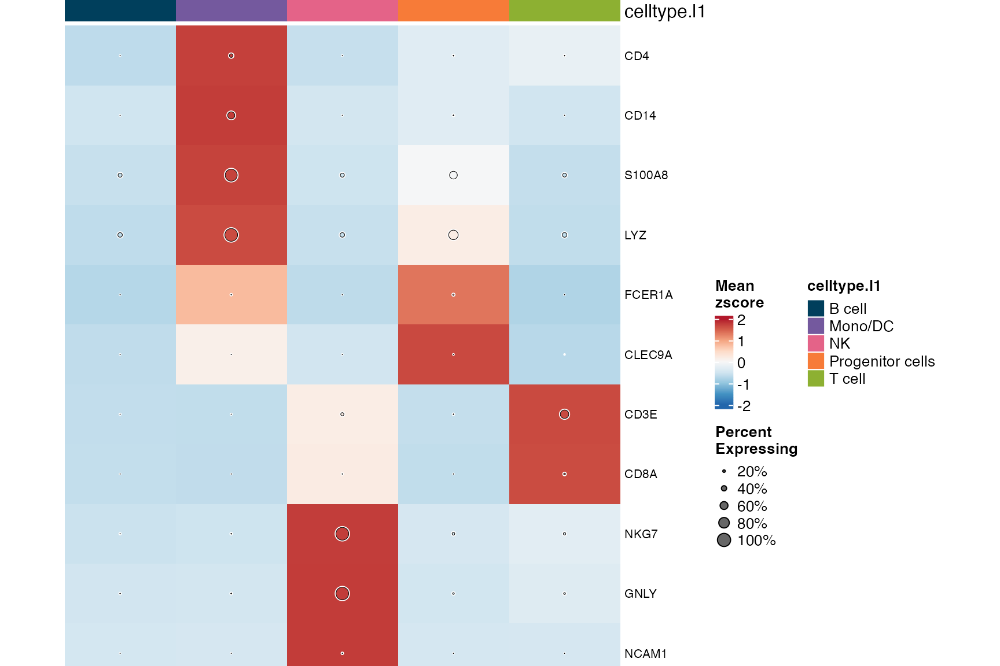
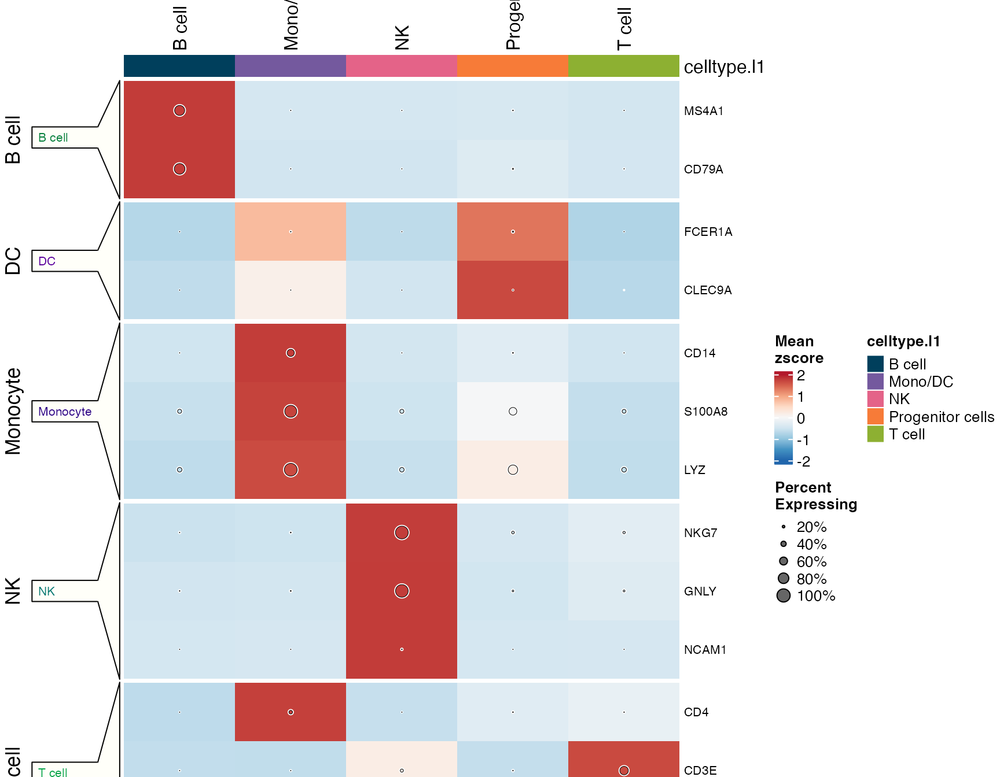
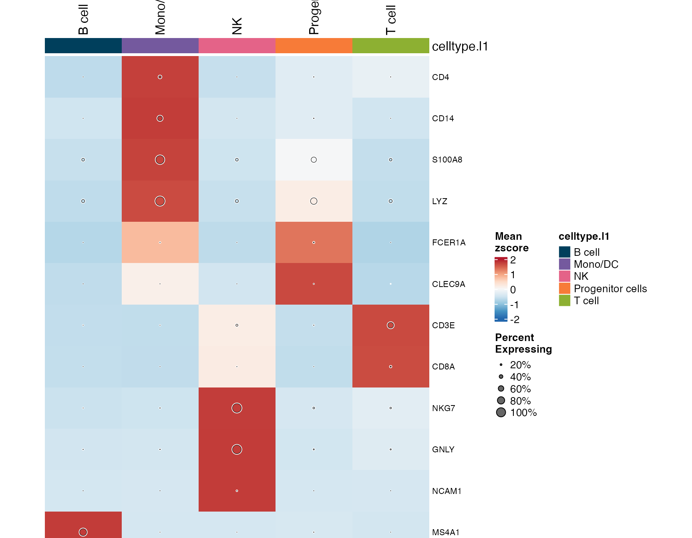
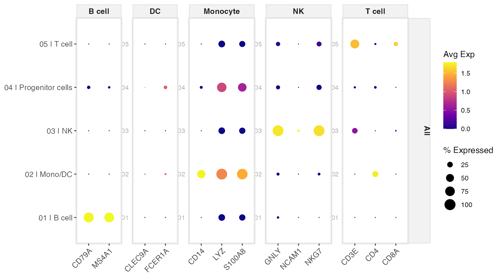
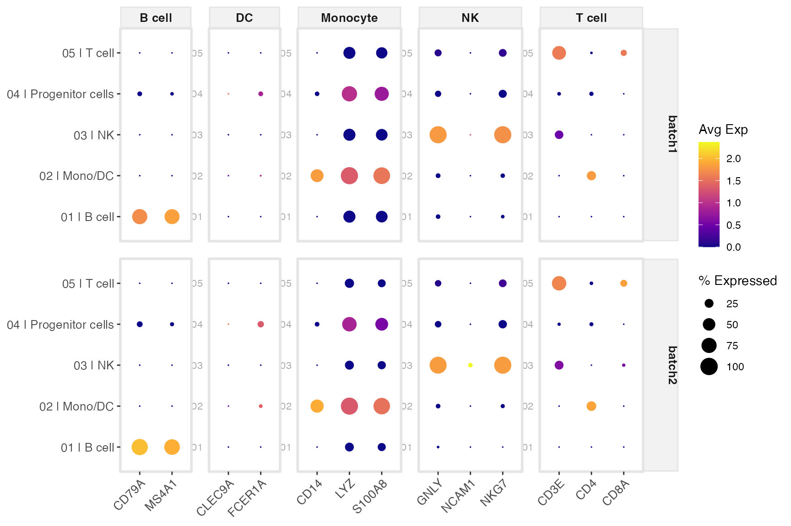
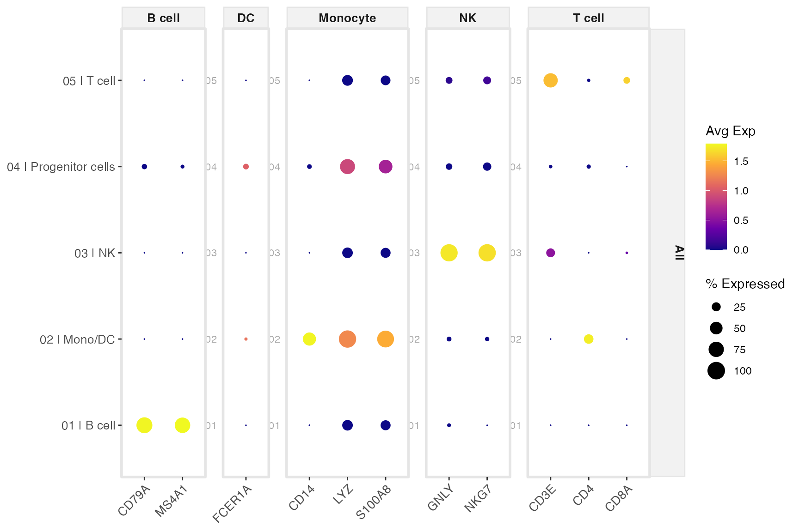
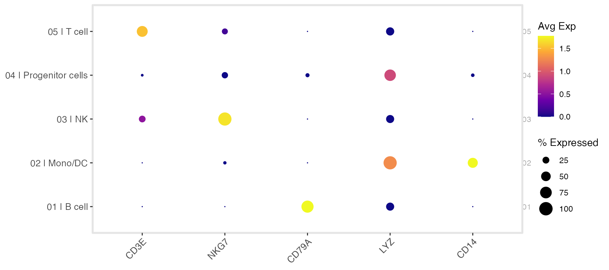
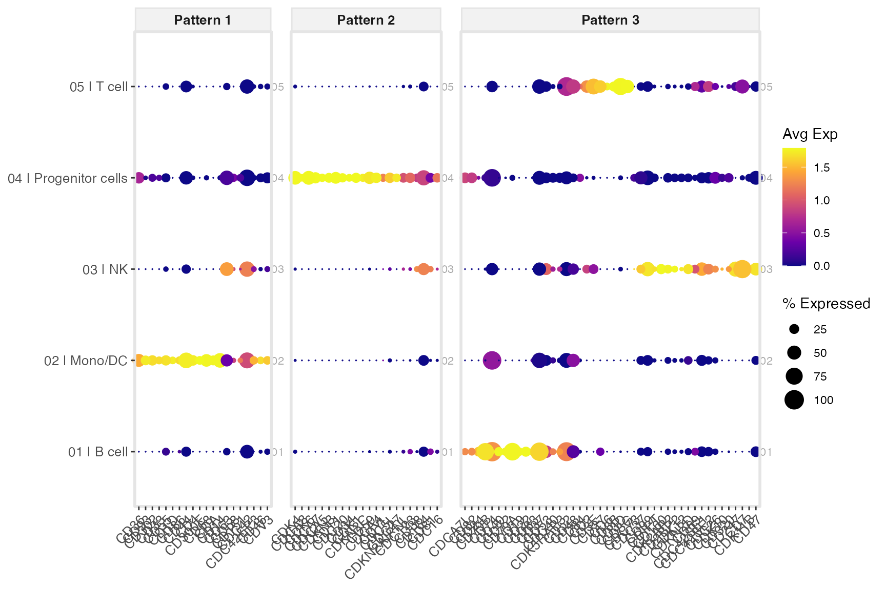

scSidekick — Heatmaps & Dot Plots: GroupHeatmap, SplitDotPlot, FastDotPlot
05_heatmaps_dotplots.RmdOverview
Three functions for comparing gene expression across groups:
-
GroupHeatmap()— ComplexHeatmap with average expression per group, optional dot-size overlay, and gene-category annotations. -
SplitDotPlot()— dot plot organized by cell-type gene blocks; accepts amarkers_dfdata frame. -
FastDotPlot()— quick dot plot from an explicit gene list or regex pattern, nomarkers_dfrequired.
GroupHeatmap
1. Basic heatmap
GroupHeatmap(bmcite,
group.by = "celltype.l1",
features = bm_markers)
Each column is one cell type; each row is one gene. Color = scaled
mean expression (z-score across groups). Column colors at the top come
from PrepObject.
2. Gene-category row annotation with feature_split
feature_split is a named vector (names = genes, values =
category labels). Genes are grouped into labeled row blocks.
feature_split <- setNames(markers_df$CellType, markers_df$Genes)
GroupHeatmap(bmcite,
group.by = "celltype.l1",
features = names(feature_split),
feature_split = feature_split)
3. Dot overlay
add_dot = TRUE overlays circles sized by
percent-expressed on top of the color-encoded expression — a dot-heatmap
hybrid.
GroupHeatmap(bmcite,
group.by = "celltype.l1",
features = bm_markers,
add_dot = TRUE,
add_bg = TRUE)
4. Multiple group.by
GroupHeatmap(bmcite,
group.by = c("celltype.l1", "seurat_clusters"),
features = bm_markers)5. Saving to disk
GroupHeatmap(bmcite,
group.by = "celltype.l1",
features = names(feature_split),
feature_split = feature_split,
add_dot = TRUE,
output_dir = "./bmcite_Figures",
object_name = "bmcite")
SplitDotPlot
SplitDotPlot accepts a markers_df data
frame (gene + cell-type column) and organizes genes into annotated
blocks along the x-axis.
1. Basic dot plot
SplitDotPlot(bmcite,
markers_df = markers_df,
group.by = "celltype.l1")
Clusters on the x-axis, grouped by their CellType block;
genes on the y-axis. Dot color = scaled mean expression; dot size =
percent-expressed.
2. With split.by
Adding split.by stacks one dot plot per level, enabling
direct expression comparison across conditions or batches.
SplitDotPlot(bmcite,
markers_df = markers_df,
group.by = "celltype.l1",
split.by = "donor")
3. SplitDotPlot2 — with gene clustering
SplitDotPlot2 adds hierarchical clustering within gene
blocks.
SplitDotPlot2(bmcite,
markers_df = markers_df,
group.by = "celltype.l1",
ClusterGenes = TRUE,
min.pct.exp = 10)
FastDotPlot
FastDotPlot is a quick path when you don’t need
cell-type block annotations.
1. Explicit gene list
FastDotPlot(bmcite,
features = c("CD3E", "CD8A", "NKG7", "CD79A", "LYZ", "CD14"),
group.by = "celltype.l1")
2. Regex pattern
pattern selects all matching genes; k_genes
keeps only the top k most variable per cluster.
FastDotPlot(bmcite,
pattern = "^CD",
group.by = "celltype.l1",
k_genes = 3)
Parameter reference — GroupHeatmap
| Parameter | Type | Default | Description |
|---|---|---|---|
group.by |
character (vector) | required | Variable(s) defining columns |
features |
character vector | required | Genes to display |
feature_split |
named character | NULL |
Gene-to-category mapping |
column_split_by |
character | NULL |
Variable for column grouping |
add_dot |
logical | TRUE |
Overlay dots by percent-expressed |
add_bg |
logical | TRUE |
Background rectangles |
output_dir |
character | NULL |
Directory for saving |
Parameter reference — SplitDotPlot
| Parameter | Type | Default | Description |
|---|---|---|---|
markers_df |
data.frame | required | Gene-to-cell-type mapping |
gene_column |
character | "Genes" |
Column name for genes |
gene_group_column |
character | "CellType" |
Column name for group labels |
group.by |
character | "seurat_clusters" |
Metadata column for x-axis groups |
split.by |
character | NULL |
Variable for stacked panels |
Parameter reference — FastDotPlot
| Parameter | Type | Default | Description |
|---|---|---|---|
features |
character vector | NULL |
Gene list (or use pattern) |
pattern |
character | NULL |
Regex to select genes |
group.by |
character | "seurat_clusters" |
X-axis groups |
k_genes |
integer | 1 |
Top k genes per cluster (pattern mode) |
min.pct.exp |
numeric | 15 |
Min % expression filter |
See also
- Vignette 04:
PlotFeaturePlots— per-gene UMAP expression maps - Vignette 06:
CellTypeAssignmentHelper— uses markers for annotation - Vignette 08:
RunGSEA— pathway-level analysis
Session info
## R version 4.3.1 (2023-06-16)
## Platform: aarch64-apple-darwin20 (64-bit)
## Running under: macOS 15.6
##
## Matrix products: default
## BLAS: /Library/Frameworks/R.framework/Versions/4.3-arm64/Resources/lib/libRblas.0.dylib
## LAPACK: /Library/Frameworks/R.framework/Versions/4.3-arm64/Resources/lib/libRlapack.dylib; LAPACK version 3.11.0
##
## locale:
## [1] en_US.UTF-8/en_US.UTF-8/en_US.UTF-8/C/en_US.UTF-8/en_US.UTF-8
##
## time zone: America/Chicago
## tzcode source: internal
##
## attached base packages:
## [1] stats graphics grDevices utils datasets methods base
##
## other attached packages:
## [1] dplyr_1.1.4 stxBrain.SeuratData_0.1.2
## [3] pbmc3k.SeuratData_3.1.4 bmcite.SeuratData_0.3.0
## [5] SeuratData_0.2.2 Seurat_5.2.1
## [7] SeuratObject_5.1.0 sp_2.1-3
## [9] scSidekick_0.1.0
##
## loaded via a namespace (and not attached):
## [1] RColorBrewer_1.1-3 shape_1.4.6.1 rstudioapi_0.16.0
## [4] jsonlite_2.0.0 magrittr_2.0.3 magick_2.8.3
## [7] spatstat.utils_3.1-0 farver_2.1.2 rmarkdown_2.29
## [10] GlobalOptions_0.1.2 fs_1.6.6 ragg_1.4.0
## [13] vctrs_0.6.5 ROCR_1.0-11 Cairo_1.6-2
## [16] spatstat.explore_3.2-7 htmltools_0.5.8.1 sass_0.4.10
## [19] sctransform_0.4.1 parallelly_1.37.1 KernSmooth_2.23-22
## [22] bslib_0.9.0 htmlwidgets_1.6.4 desc_1.4.3
## [25] ica_1.0-3 plyr_1.8.9 plotly_4.10.4
## [28] zoo_1.8-14 cachem_1.1.0 igraph_2.0.3
## [31] iterators_1.0.14 mime_0.13 lifecycle_1.0.4
## [34] pkgconfig_2.0.3 Matrix_1.6-5 R6_2.6.1
## [37] fastmap_1.2.0 clue_0.3-65 fitdistrplus_1.1-11
## [40] future_1.33.2 shiny_1.11.1 digest_0.6.37
## [43] colorspace_2.1-1 S4Vectors_0.40.2 patchwork_1.3.1
## [46] tensor_1.5 RSpectra_0.16-1 irlba_2.3.5.1
## [49] textshaping_0.3.7 labeling_0.4.3 progressr_0.14.0
## [52] spatstat.sparse_3.0-3 httr_1.4.7 polyclip_1.10-6
## [55] abind_1.4-8 compiler_4.3.1 withr_3.0.2
## [58] doParallel_1.0.17 fastDummies_1.7.3 highr_0.10
## [61] MASS_7.3-60.0.1 rappdirs_0.3.3 rjson_0.2.21
## [64] tools_4.3.1 lmtest_0.9-40 otel_0.2.0
## [67] httpuv_1.6.16 future.apply_1.11.2 goftest_1.2-3
## [70] glue_1.8.0 nlme_3.1-164 promises_1.5.0
## [73] grid_4.3.1 Rtsne_0.17 cluster_2.1.6
## [76] reshape2_1.4.4 generics_0.1.4 gtable_0.3.6
## [79] spatstat.data_3.0-4 tidyr_1.3.1 data.table_1.15.4
## [82] BiocGenerics_0.48.1 spatstat.geom_3.2-9 RcppAnnoy_0.0.22
## [85] foreach_1.5.2 ggrepel_0.9.6 RANN_2.6.1
## [88] pillar_1.11.0 stringr_1.5.1 spam_2.10-0
## [91] RcppHNSW_0.6.0 later_1.4.2 circlize_0.4.16
## [94] splines_4.3.1 lattice_0.22-6 survival_3.5-8
## [97] deldir_2.0-4 tidyselect_1.2.1 ComplexHeatmap_2.18.0
## [100] miniUI_0.1.1.1 pbapply_1.7-2 knitr_1.45
## [103] gridExtra_2.3 IRanges_2.36.0 scattermore_1.2
## [106] stats4_4.3.1 xfun_0.52 matrixStats_1.2.0
## [109] stringi_1.8.7 lazyeval_0.2.2 yaml_2.3.10
## [112] evaluate_0.23 codetools_0.2-20 tibble_3.3.0
## [115] cli_3.6.5 uwot_0.1.16 xtable_1.8-4
## [118] reticulate_1.35.0 systemfonts_1.0.6 jquerylib_0.1.4
## [121] dichromat_2.0-0.1 Rcpp_1.1.0 globals_0.16.3
## [124] spatstat.random_3.2-3 png_0.1-8 parallel_4.3.1
## [127] pkgdown_2.1.3 ggplot2_3.5.2 dotCall64_1.1-1
## [130] listenv_0.9.1 viridisLite_0.4.2 scales_1.4.0
## [133] ggridges_0.5.6 purrr_1.0.4 crayon_1.5.2
## [136] GetoptLong_1.0.5 rlang_1.1.6 cowplot_1.2.0.9000